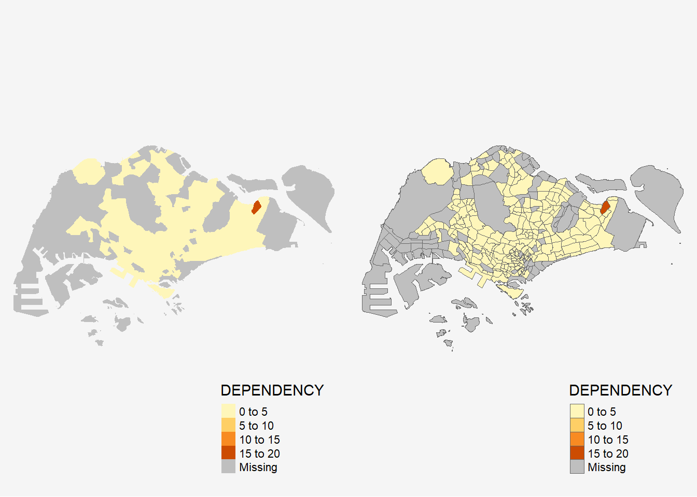
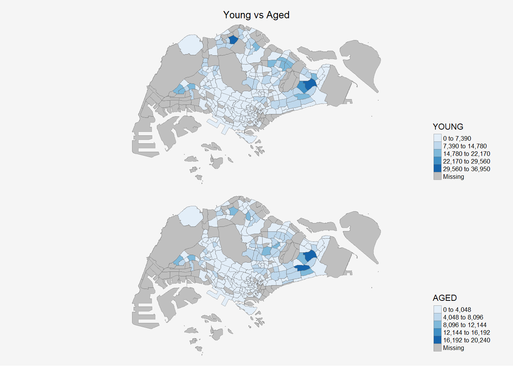

pacman::p_load(sf, tmap, tidyverse,
knitr)Hands-on Exercise 7a: Choropleth Mapping with R

1 Overview
In this chapter, you will learn how to plot functional and truthful choropleth maps in R by using the tmap package.
2 Getting Started
In this exercise, we will be using the following packages:
| Package | Description |
|---|---|
| tmap | For choropleth mapping. |
| tidyverse | readr: For importing delimited text file. tidyr: For tidying data. dplyr: For data wrangling. |
| sf | For handling geospatial data. |
| knitr | For html tables |
3 Importing Data into R
Two data set will be used to create the choropleth map.
Geospatial: Master Plan 2014 Subzone Boundary (Web) (i.e. MP14_SUBZONE_WEB_PL) in ESRI shapefile format, downloaded from data.gov.sg. It consists of the geographical boundary of Singapore at the planning subzone level. The data is based on URA Master Plan 2014.
Aspatial: Singapore Residents by Planning Area / Subzone, Age Group, Sex and Type of Dwelling, June 2011-2020 in csv format (i.e.
respopagesextod2011to2020.csv), downloaded from Department of Statistics, Singapore. Does not contain any coordinates values, but it’s PA and SZ fields can be used as unique identifiers to geocode to MP14_SUBZONE_WEB_PL shapefile.
3.1 Importing Geospatial Data
| Function | Package | Description | Output |
|---|---|---|---|
st_read() |
sf | Import MP14_SUBZONE_WEB_PL shapefile into R as a simple feature data frame. | Simple feature; multipolygon |
mpsz <- st_read(dsn = "data/geospatial",
layer = "MP14_SUBZONE_WEB_PL")Reading layer `MP14_SUBZONE_WEB_PL' from data source
`C:\kytjy\ISSS608-VAA\Hands-on_Ex\Hands-on_Ex07\data\geospatial'
using driver `ESRI Shapefile'
Simple feature collection with 323 features and 15 fields
Geometry type: MULTIPOLYGON
Dimension: XY
Bounding box: xmin: 2667.538 ymin: 15748.72 xmax: 56396.44 ymax: 50256.33
Projected CRS: SVY21Let us examine the content of mpsz by using the code chunk below.
| OBJECTID | SUBZONE_NO | SUBZONE_N | SUBZONE_C | CA_IND | PLN_AREA_N | PLN_AREA_C | REGION_N | REGION_C | INC_CRC | FMEL_UPD_D | X_ADDR | Y_ADDR | SHAPE_Leng | SHAPE_Area | geometry |
|---|---|---|---|---|---|---|---|---|---|---|---|---|---|---|---|
| 1 | 1 | MARINA SOUTH | MSSZ01 | Y | MARINA SOUTH | MS | CENTRAL REGION | CR | 5ED7EB253F99252E | 2014-12-05 | 31595.84 | 29220.19 | 5267.381 | 1630379.3 | MULTIPOLYGON (((31495.56 30... |
| 2 | 1 | PEARL'S HILL | OTSZ01 | Y | OUTRAM | OT | CENTRAL REGION | CR | 8C7149B9EB32EEFC | 2014-12-05 | 28679.06 | 29782.05 | 3506.107 | 559816.2 | MULTIPOLYGON (((29092.28 30... |
| 3 | 3 | BOAT QUAY | SRSZ03 | Y | SINGAPORE RIVER | SR | CENTRAL REGION | CR | C35FEFF02B13E0E5 | 2014-12-05 | 29654.96 | 29974.66 | 1740.926 | 160807.5 | MULTIPOLYGON (((29932.33 29... |
| 4 | 8 | HENDERSON HILL | BMSZ08 | N | BUKIT MERAH | BM | CENTRAL REGION | CR | 3775D82C5DDBEFBD | 2014-12-05 | 26782.83 | 29933.77 | 3313.625 | 595428.9 | MULTIPOLYGON (((27131.28 30... |
| 5 | 3 | REDHILL | BMSZ03 | N | BUKIT MERAH | BM | CENTRAL REGION | CR | 85D9ABEF0A40678F | 2014-12-05 | 26201.96 | 30005.70 | 2825.594 | 387429.4 | MULTIPOLYGON (((26451.03 30... |
3.2 Importing Attribute Data
| Function | Package | Description | Output |
|---|---|---|---|
read_csv() |
readr | Import respopagsex2011to2020.csv file into R as a dataframe called popagsex | dataframe |
popdata <- read_csv("data/aspatial/respopagesextod2011to2020.csv")Let us examine the content of mpsz.
| PA | SZ | AG | Sex | TOD | Pop | Time |
|---|---|---|---|---|---|---|
| Ang Mo Kio | Ang Mo Kio Town Centre | 0_to_4 | Males | HDB 1- and 2-Room Flats | 0 | 2011 |
| Ang Mo Kio | Ang Mo Kio Town Centre | 0_to_4 | Males | HDB 3-Room Flats | 10 | 2011 |
| Ang Mo Kio | Ang Mo Kio Town Centre | 0_to_4 | Males | HDB 4-Room Flats | 30 | 2011 |
| Ang Mo Kio | Ang Mo Kio Town Centre | 0_to_4 | Males | HDB 5-Room and Executive Flats | 50 | 2011 |
| Ang Mo Kio | Ang Mo Kio Town Centre | 0_to_4 | Males | HUDC Flats (excluding those privatised) | 0 | 2011 |
4 Data Preparation
Before a thematic map can be prepared, we need to prepare a data table with year 2020 values. The data table should include the variables PA, SZ, YOUNG, ECONOMY ACTIVE, AGED, TOTAL, DEPENDENCY.
- YOUNG: age group 0-4 until age group 20-24,
- ECONOMY ACTIVE: age group 25-29 until age group 60-64,
- AGED: age group 65 and above,
- TOTAL: all age group, and
- DEPENDENCY: the ratio between young and aged against economy active group
4.1 Data wrangling
The following data wrangling and transformation functions will be used:
- pivot_wider() of tidyr package, and
- mutate(), filter(), group_by() and select() of dplyr package
popdata2020 <- popdata %>%
filter(Time == 2020) %>%
group_by(PA, SZ, AG) %>%
summarise(`POP` = sum(`Pop`)) %>%
ungroup() %>%
pivot_wider(names_from=AG,
values_from=POP) %>%
mutate(YOUNG = rowSums(.[3:6])
+rowSums(.[12])) %>%
mutate(`ECONOMY ACTIVE` = rowSums(.[7:11])+
rowSums(.[13:15]))%>%
mutate(`AGED`=rowSums(.[16:21])) %>%
mutate(`TOTAL`=rowSums(.[3:21])) %>%
mutate(`DEPENDENCY` = (`YOUNG` + `AGED`)
/`ECONOMY ACTIVE`) %>%
select(`PA`, `SZ`, `YOUNG`,
`ECONOMY ACTIVE`, `AGED`,
`TOTAL`, `DEPENDENCY`)| PA | SZ | YOUNG | ECONOMY ACTIVE | AGED | TOTAL | DEPENDENCY |
|---|---|---|---|---|---|---|
| Ang Mo Kio | Ang Mo Kio Town Centre | 1440 | 2610 | 760 | 4810 | 0.8429119 |
| Ang Mo Kio | Cheng San | 6640 | 15460 | 6050 | 28150 | 0.8208279 |
| Ang Mo Kio | Chong Boon | 6150 | 13950 | 6470 | 26570 | 0.9046595 |
| Ang Mo Kio | Kebun Bahru | 5540 | 12090 | 5120 | 22750 | 0.8817204 |
| Ang Mo Kio | Sembawang Hills | 2100 | 3410 | 1310 | 6820 | 1.0000000 |
4.2 Joining the attribute data and geospatial data
Before we can perform the georelational join, one extra step is required to convert the values in PA and SZ fields to uppercase. This is because the values of PA and SZ fields are made up of upper- and lowercase. On the other, hand the SUBZONE_N and PLN_AREA_N are in uppercase.
popdata2020 <- popdata2020 %>%
mutate_at(.vars = vars(PA, SZ),
.funs = funs(toupper)) %>%
filter(`ECONOMY ACTIVE` > 0)Next, left_join() of dplyr is used to join the geographical data and attribute table using planning subzone name e.g. SUBZONE_N and SZ as the common identifier.
mpsz_pop2020 <- left_join(mpsz, popdata2020,
by = c("SUBZONE_N" = "SZ"))Important
left_join() of dplyr package is used with mpsz simple feature data frame as the left data table is to ensure that the output will be a simple features data frame.
| OBJECTID | SUBZONE_NO | SUBZONE_N | SUBZONE_C | CA_IND | PLN_AREA_N | PLN_AREA_C | REGION_N | REGION_C | INC_CRC | FMEL_UPD_D | X_ADDR | Y_ADDR | SHAPE_Leng | SHAPE_Area | PA | YOUNG | ECONOMY ACTIVE | AGED | TOTAL | DEPENDENCY | geometry |
|---|---|---|---|---|---|---|---|---|---|---|---|---|---|---|---|---|---|---|---|---|---|
| 1 | 1 | MARINA SOUTH | MSSZ01 | Y | MARINA SOUTH | MS | CENTRAL REGION | CR | 5ED7EB253F99252E | 2014-12-05 | 31595.84 | 29220.19 | 5267.381 | 1630379.3 | NA | NA | NA | NA | NA | NA | MULTIPOLYGON (((31495.56 30... |
| 2 | 1 | PEARL'S HILL | OTSZ01 | Y | OUTRAM | OT | CENTRAL REGION | CR | 8C7149B9EB32EEFC | 2014-12-05 | 28679.06 | 29782.05 | 3506.107 | 559816.2 | OUTRAM | 1200 | 2860 | 2120 | 6180 | 1.1608392 | MULTIPOLYGON (((29092.28 30... |
| 3 | 3 | BOAT QUAY | SRSZ03 | Y | SINGAPORE RIVER | SR | CENTRAL REGION | CR | C35FEFF02B13E0E5 | 2014-12-05 | 29654.96 | 29974.66 | 1740.926 | 160807.5 | SINGAPORE RIVER | 0 | 40 | 10 | 50 | 0.2500000 | MULTIPOLYGON (((29932.33 29... |
| 4 | 8 | HENDERSON HILL | BMSZ08 | N | BUKIT MERAH | BM | CENTRAL REGION | CR | 3775D82C5DDBEFBD | 2014-12-05 | 26782.83 | 29933.77 | 3313.625 | 595428.9 | BUKIT MERAH | 3150 | 6900 | 3320 | 13370 | 0.9376812 | MULTIPOLYGON (((27131.28 30... |
| 5 | 3 | REDHILL | BMSZ03 | N | BUKIT MERAH | BM | CENTRAL REGION | CR | 85D9ABEF0A40678F | 2014-12-05 | 26201.96 | 30005.70 | 2825.594 | 387429.4 | BUKIT MERAH | 2900 | 6020 | 1740 | 10660 | 0.7707641 | MULTIPOLYGON (((26451.03 30... |
4.3 Write and Read as .rds
write_rds(mpsz_pop2020, "data/rds/mpszpop2020.rds")read_rds("data/rds/mpszpop2020.rds")Simple feature collection with 323 features and 21 fields
Geometry type: MULTIPOLYGON
Dimension: XY
Bounding box: xmin: 2667.538 ymin: 15748.72 xmax: 56396.44 ymax: 50256.33
Projected CRS: SVY21
First 10 features:
OBJECTID SUBZONE_NO SUBZONE_N SUBZONE_C CA_IND PLN_AREA_N
1 1 1 MARINA SOUTH MSSZ01 Y MARINA SOUTH
2 2 1 PEARL'S HILL OTSZ01 Y OUTRAM
3 3 3 BOAT QUAY SRSZ03 Y SINGAPORE RIVER
4 4 8 HENDERSON HILL BMSZ08 N BUKIT MERAH
5 5 3 REDHILL BMSZ03 N BUKIT MERAH
6 6 7 ALEXANDRA HILL BMSZ07 N BUKIT MERAH
7 7 9 BUKIT HO SWEE BMSZ09 N BUKIT MERAH
8 8 2 CLARKE QUAY SRSZ02 Y SINGAPORE RIVER
9 9 13 PASIR PANJANG 1 QTSZ13 N QUEENSTOWN
10 10 7 QUEENSWAY QTSZ07 N QUEENSTOWN
PLN_AREA_C REGION_N REGION_C INC_CRC FMEL_UPD_D X_ADDR
1 MS CENTRAL REGION CR 5ED7EB253F99252E 2014-12-05 31595.84
2 OT CENTRAL REGION CR 8C7149B9EB32EEFC 2014-12-05 28679.06
3 SR CENTRAL REGION CR C35FEFF02B13E0E5 2014-12-05 29654.96
4 BM CENTRAL REGION CR 3775D82C5DDBEFBD 2014-12-05 26782.83
5 BM CENTRAL REGION CR 85D9ABEF0A40678F 2014-12-05 26201.96
6 BM CENTRAL REGION CR 9D286521EF5E3B59 2014-12-05 25358.82
7 BM CENTRAL REGION CR 7839A8577144EFE2 2014-12-05 27680.06
8 SR CENTRAL REGION CR 48661DC0FBA09F7A 2014-12-05 29253.21
9 QT CENTRAL REGION CR 1F721290C421BFAB 2014-12-05 22077.34
10 QT CENTRAL REGION CR 3580D2AFFBEE914C 2014-12-05 24168.31
Y_ADDR SHAPE_Leng SHAPE_Area PA YOUNG ECONOMY ACTIVE AGED
1 29220.19 5267.381 1630379.3 <NA> NA NA NA
2 29782.05 3506.107 559816.2 OUTRAM 1200 2860 2120
3 29974.66 1740.926 160807.5 SINGAPORE RIVER 0 40 10
4 29933.77 3313.625 595428.9 BUKIT MERAH 3150 6900 3320
5 30005.70 2825.594 387429.4 BUKIT MERAH 2900 6020 1740
6 29991.38 4428.913 1030378.8 BUKIT MERAH 3340 6800 3420
7 30230.86 3275.312 551732.0 BUKIT MERAH 3130 7700 3610
8 30222.86 2208.619 290184.7 SINGAPORE RIVER 0 50 10
9 29893.78 6571.323 1084792.3 QUEENSTOWN 1290 2600 610
10 30104.18 3454.239 631644.3 QUEENSTOWN 50 140 60
TOTAL DEPENDENCY geometry
1 NA NA MULTIPOLYGON (((31495.56 30...
2 6180 1.1608392 MULTIPOLYGON (((29092.28 30...
3 50 0.2500000 MULTIPOLYGON (((29932.33 29...
4 13370 0.9376812 MULTIPOLYGON (((27131.28 30...
5 10660 0.7707641 MULTIPOLYGON (((26451.03 30...
6 13560 0.9941176 MULTIPOLYGON (((25899.7 297...
7 14440 0.8753247 MULTIPOLYGON (((27746.95 30...
8 60 0.2000000 MULTIPOLYGON (((29351.26 29...
9 4500 0.7307692 MULTIPOLYGON (((20996.49 30...
10 250 0.7857143 MULTIPOLYGON (((24472.11 29...5 Choropleth Mapping Geospatial Data Using tmap
Two approaches can be used to prepare thematic map using tmap, they are:
- Plotting a thematic map quickly by using
qtm(). - Plotting highly customisable thematic map by using tmap elements.
5.1 Plotting a choropleth map quickly by using qtm()
The easiest and quickest to draw a choropleth map using tmap is using qtm(). It is concise and provides a good default visualisation in many cases.
\[QTM = Quick\ Thematic\ Maps\]
The code chunk below will draw a cartographic standard choropleth map as shown below.
par(bg = '#f5f5f5')
tmap_mode("plot")
qtm(mpsz_pop2020,
fill = "DEPENDENCY")
Things to learn from the code chunk above:
tmap_mode()with “plot” option is used to produce a static map. For interactive mode, “view” option should be used.fillargument is used to map the attribute (i.e. DEPENDENCY).
5.2 Creating a choropleth map by using tmap’s elements
Despite its usefulness of drawing a choropleth map quickly and easily, the disadvantge of qtm() is that it makes aesthetics of individual layers harder to control. To draw a high quality cartographic choropleth map as shown in the figure below, tmap’s drawing elements should be used.

5.2.1 Drawing a base map
The basic building block of tmap is tm_shape() followed by one or more layer elemments such as tm_fill() and tm_polygons().
In the code chunk below, tm_shape() is used to define the input data (i.e mpsz_pop2020) and tm_polygons() is used to draw the planning subzone polygons.
tm_shape(mpsz_pop2020) +
tm_polygons() +
tm_layout(bg.color = "#f5f5f5",
frame= FALSE)5.2.2 Drawing a choropleth map using tm_polygons()
To draw a choropleth map showing the geographical distribution of a selected variable by planning subzone, we just need to assign the target variable such as Dependency to tm_polygons().
tm_shape(mpsz_pop2020)+
tm_polygons("DEPENDENCY") +
tm_layout(bg.color = "#f5f5f5",
frame = FALSE)Things to learn from tm_polygons():
- The default interval binning used to draw the choropleth map is called “pretty”.
- The default colour scheme used is YlOrRd of ColorBrewer.
- By default, Missing value will be shaded in grey.
5.2.3 Drawing a choropleth map using tm_fill() and tm_border()
tm_polygons() is a wraper of tm_fill() and tm_border(). tm_fill() shades the polygons by using the default colour scheme and tm_borders() adds the borders of the shapefile onto the choropleth map.
fill <- tm_shape(mpsz_pop2020)+
tm_fill("DEPENDENCY") +
tm_layout(bg.color = "#f5f5f5",
frame= FALSE)
border <- tm_shape(mpsz_pop2020)+
tm_fill("DEPENDENCY") +
tm_borders(lwd = 0.1, alpha = 1) +
tm_layout(bg.color = "#f5f5f5",
frame= FALSE)
tmap_arrange(fill, border)
Notice that light-gray border lines have been added on the choropleth map when tm_borders() is used.
The alpha argument is used to define transparency number between 0 (totally transparent) and 1 (not transparent). By default, the alpha value of the col is used (normally 1).
Beside alpha argument, there are three other arguments for tm_borders(), they are:
- col = border colour,
- lwd = border line width. The default is 1, and
- lty = border line type. The default is “solid”.
5.3 Data Classification Methods of tmap
Most choropleth maps employ some methods of data classification. The point of classification is to take a large number of observations and group them into data ranges or classes.
tmap provides a total 10 data classification methods, namely: fixed, sd, equal, pretty (default), quantile, kmeans, hclust, bclust, fisher, and jenks.
To define a data classification method, the style argument of tm_fill() or tm_polygons() will be used.
5.3.1 Plotting choropleth maps with built-in classification methods
5.3.1.1 Different Classification Methods
Show the code
pretty <- tm_shape(mpsz_pop2020)+
tm_fill("DEPENDENCY",
n = 5) +
tm_borders(alpha = 0.5) +
tm_layout(main.title = "Pretty",
main.title.size = 0.8,
main.title.position = "center",
legend.position = c("right", "bottom"),
legend.height = .45,
legend.width = .2,
frame = FALSE,
bg.color = "#f5f5f5"
)
jenks <- tm_shape(mpsz_pop2020)+
tm_fill("DEPENDENCY",
n = 5,
style = "jenks") +
tm_borders(alpha = 0.5) +
tm_layout(main.title = "Jenks",
main.title.size = 0.8,
main.title.position = "center",
legend.position = c("right", "bottom"),
legend.height = .45,
legend.width = .2,
frame = FALSE,
bg.color = "#f5f5f5"
)
equal <- tm_shape(mpsz_pop2020)+
tm_fill("DEPENDENCY",
n = 5,
style = "equal") +
tm_borders(alpha = 0.5) +
tm_layout(main.title = "Equal",
main.title.size = 0.8,
main.title.position = "center",
legend.position = c("right", "bottom"),
legend.height = .45,
legend.width = .2,
frame = FALSE,
bg.color = "#f5f5f5"
)
kmeans <- tm_shape(mpsz_pop2020)+
tm_fill("DEPENDENCY",
n = 5,
style = "kmeans") +
tm_borders(alpha = 0.5) +
tm_layout(main.title = "Kmeans",
main.title.size = 0.8,
main.title.position = "center",
legend.position = c("right", "bottom"),
legend.height = .45,
legend.width = .2,
frame = FALSE,
bg.color = "#f5f5f5"
)
tmap_arrange(pretty, jenks,
equal, kmeans)5.3.1.2 Different Number of Classes
Show the code
p2 <- tm_shape(mpsz_pop2020)+
tm_fill("DEPENDENCY",
n = 2,
style = "quantile") +
tm_borders(alpha = 0.5) +
tm_layout(main.title = "n = 2",
main.title.size = 0.8,
main.title.position = "center",
legend.position = c("right", "bottom"),
legend.height = .45,
legend.width = .2,
frame = FALSE,
bg.color = "#f5f5f5"
)
p5 <- tm_shape(mpsz_pop2020)+
tm_fill("DEPENDENCY",
n = 5,
style = "quantile") +
tm_borders(alpha = 0.5) +
tm_layout(main.title = "n = 5",
main.title.size = 0.8,
main.title.position = "center",
legend.position = c("right", "bottom"),
legend.height = .45,
legend.width = .2,
frame = FALSE,
bg.color = "#f5f5f5"
)
p7 <- tm_shape(mpsz_pop2020)+
tm_fill("DEPENDENCY",
n = 7,
style = "quantile") +
tm_borders(alpha = 0.5) +
tm_layout(main.title = "n = 7",
main.title.size = 0.8,
main.title.position = "center",
legend.position = c("right", "bottom"),
legend.height = .45,
legend.width = .2,
frame = FALSE,
bg.color = "#f5f5f5"
)
p10 <- tm_shape(mpsz_pop2020)+
tm_fill("DEPENDENCY",
n = 10,
style = "quantile") +
tm_borders(alpha = 0.5) +
tm_layout(main.title = "n = 10",
main.title.size = 0.8,
main.title.position = "center",
legend.position = c("right", "bottom"),
legend.height = .45,
legend.width = .2,
frame = FALSE,
bg.color = "#f5f5f5"
)
tmap_arrange(p2, p5,
p7, p10)5.3.2 Plotting choropleth map with custom break
For all the built-in styles, the category breaks are computed internally. In order to override these defaults, the breakpoints can be set explicitly by means of the breaks argument to the tm_fill(). In tmap the breaks include a minimum and maximum. As a result, in order to end up with n categories, n+1 elements must be specified in the breaks option (the values must be in increasing order).
Before we get started, it is always a good practice to get some descriptive statistics on the variable before setting the break points. Code chunk below will be used to compute and display the descriptive statistics of DEPENDENCY field.
summary(mpsz_pop2020$DEPENDENCY) Min. 1st Qu. Median Mean 3rd Qu. Max. NA's
0.1111 0.7147 0.7866 0.8585 0.8763 19.0000 92 With reference to the results above, we set break point at 0.60, 0.70, 0.80, and 0.90. In addition, we also need to include a minimum and maximum, which we set at 0 and 100. Our breaks vector is thus c(0, 0.60, 0.70, 0.80, 0.90, 1.00)
Now, we will plot the choropleth map by using the code chunk below.
tm_shape(mpsz_pop2020)+
tm_fill("DEPENDENCY",
breaks = c(0, 0.60, 0.70, 0.80, 0.90, 1.00)) +
tm_borders(alpha = 0.5) +
tm_layout(frame = FALSE,
bg.color = "#f5f5f5")5.4 Colour Scheme
tmap supports colour ramps either defined by the user or a set of predefined colour ramps from the RColorBrewer package.
To change the colour, we assign the preferred colour to palette argument of tm_fill() as shown in the code chunk below.
tm_shape(mpsz_pop2020)+
tm_fill("DEPENDENCY",
n = 6,
style = "quantile",
palette = "Blues") +
tm_borders(alpha = 0.5) +
tm_layout(frame = FALSE,
bg.color = "#f5f5f5")To reverse the colour shading, add a “-” prefix.
tm_shape(mpsz_pop2020)+
tm_fill("DEPENDENCY",
style = "quantile",
palette = "-Blues") +
tm_borders(alpha = 0.5) +
tm_layout(
frame = FALSE,
bg.color = "#f5f5f5"
)5.5 Map Layouts
Map layout refers to the combination of all map elements into a cohesive map. Map elements include among others the objects to be mapped, the title, the scale bar, the compass, margins and aspects ratios. Colour settings and data classification methods covered in the previous section relate to the palette and break-points are used to affect how the map looks
5.5.1 Map Legend
In tmap, several legend options are provided to change the placement, format and appearance of the legend.
tm_shape(mpsz_pop2020)+
tm_fill("DEPENDENCY",
style = "jenks",
palette = "Blues",
legend.hist = TRUE, #<<
legend.is.portrait = TRUE, #<<
legend.hist.z = 0.1) + #<<
tm_layout(main.title = "Distribution of Dependency Ratio by planning subzone \n(Jenks classification)",
main.title.position = "center",
main.title.size = 1,
legend.height = 0.42,
legend.width = 0.33,
legend.outside = FALSE,
legend.position = c("right", "bottom"),
frame = FALSE,
bg.color = "#f5f5f5") +
tm_borders(alpha = 0.5)5.5.2 Map Style
tmap allows a wide variety of layout settings to be changed. They can be called by using tmap_style().
The code chunk below shows the classic style is used.
tm_shape(mpsz_pop2020)+
tm_fill("DEPENDENCY",
style = "quantile",
palette = "-Greens") +
tm_borders(alpha = 0.5) +
tmap_style("classic")
5.2.3 Cartographic Furniture
Beside map style, tmap also also provides arguments to draw other map furniture such as compass, scale bar and grid lines.
In the code chunk below, tm_compass(), tm_scale_bar() and tm_grid() are used to add compass, scale bar and grid lines onto the choropleth map.
tm_shape(mpsz_pop2020)+
tm_fill("DEPENDENCY",
style = "quantile",
palette = "Blues",
title = "No. of persons") +
tm_layout(main.title = "Distribution of Dependency Ratio \nby planning subzone",
main.title.position = "center",
main.title.size = 1.2,
legend.height = 0.45,
legend.width = 0.35,
frame = TRUE) +
tm_borders(alpha = 0.5) +
tm_compass(type="8star", size = 2) +
tm_scale_bar(width = 0.15) +
tm_grid(lwd = 0.1, alpha = 0.2) +
tm_credits("Source: Planning Sub-zone boundary from Urban Redevelopment Authorithy (URA)\n and Population data from Department of Statistics DOS",
position = c("left", "bottom"))
The code chunk below resets to the default style:
tmap_style("white")5.6 Drawing Small Multiple Choropleth Maps
Small multiple maps, also referred to as facet maps, are composed of many maps arrange side-by-side, and sometimes stacked vertically. Small multiple maps enable the visualisation of how spatial relationships change with respect to another variable, such as time.
In tmap, small multiple maps can be plotted in three ways:
- by assigning multiple values to at least one of the aesthetic arguments,
- by defining a group-by variable in
tm_facets(), and - by creating multiple stand-alone maps with
tmap_arrange().
5.6.1 By assigning multiple values to at least one of the aesthetic arguments
In this example, small multiple choropleth maps are created by defining ncols in tm_fill().
tm_shape(mpsz_pop2020)+
tm_fill(c("YOUNG", "AGED"),
style = "equal",
palette = "Blues") +
tm_layout(legend.position = c("right", "bottom"),
main.title = c("Young vs Aged"),
main.title.size = 0.8,
main.title.position = "center",
frame = FALSE,
bg.color = "#f5f5f5") +
tm_borders(alpha = 0.5) +
tmap_style("white")
In this example, small multiple choropleth maps are created by assigning multiple values to at least one of the aesthetic arguments
tm_shape(mpsz_pop2020)+
tm_polygons(c("DEPENDENCY","AGED"),
style = c("equal", "quantile"),
palette = list("Blues","Greens")) +
tm_layout(legend.position = c("right", "bottom"),
frame = FALSE,
bg.color = "#f5f5f5")5.6.2 By defining a group-by variable in tm_facets()
tm_shape(mpsz_pop2020) +
tm_fill("DEPENDENCY",
style = "quantile",
palette = "Blues",
thres.poly = 0) +
tm_facets(by="REGION_N",
free.coords=TRUE,
drop.shapes=FALSE) +
tm_layout(legend.show = FALSE,
title.position = c("center", "center"),
title.size = 20,
frame = FALSE,
bg.color = "#f5f5f5") +
tm_borders(alpha = 0.5)
5.6.3 By creating multiple stand-alone maps with tmap_arrange()
youngmap <- tm_shape(mpsz_pop2020)+
tm_polygons("YOUNG",
style = "quantile",
palette = "Blues") +
tm_layout(frame = FALSE,
bg.color = "#f5f5f5")
agedmap <- tm_shape(mpsz_pop2020)+
tm_polygons("AGED",
style = "quantile",
palette = "Blues")+
tm_layout(frame = FALSE,
bg.color = "#f5f5f5")
tmap_arrange(youngmap, agedmap, asp=1, ncol=2)5.7 Mapping Spatial Object Meeting a Selection Criterion
Instead of creating small multiple choropleth map, you can also use selection funtion to map spatial objects meeting the selection criterion.
tm_shape(mpsz_pop2020[mpsz_pop2020$REGION_N=="CENTRAL REGION", ])+
tm_fill("DEPENDENCY",
style = "quantile",
palette = "Blues",
legend.hist = TRUE,
legend.is.portrait = TRUE,
legend.hist.z = 0.1) +
tm_layout(legend.outside = TRUE,
legend.height = 0.45,
legend.width = 5.0,
legend.position = c("right", "bottom"),
frame = FALSE,
bg.color = "#f5f5f5") +
tm_borders(alpha = 0.5)6 Reference
- Kam, T.S. (2023). Choropleth Mapping with R.